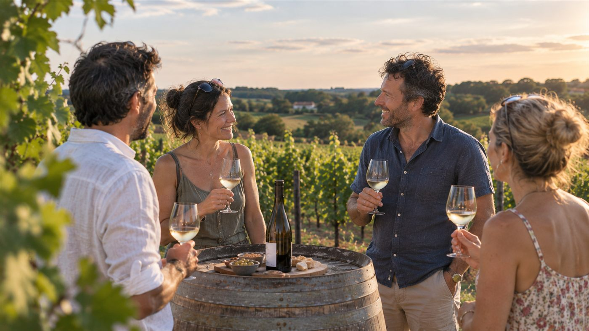

Tout le potentiel de votre hébergement
Votre hébergement s'inscrit dans un environnement unique, avec son histoire, son terroir, son identité. Pour le révéler pleinement, chaque maillon compte : de la qualité de l'offre à sa mise en valeur, de la commercialisation à l'expérience voyageur.
Une gestion 360°
Mise en marché
Photos, rédaction des annonces, création et paramétrage des comptes, publication et référencement sur les plateformes pertinentes et les portails thématiques.
Stratégie commerciale
Définition de la stratégie globale et pilotage : distribution, tarifs, conditions d'annulation, durées minimales de séjour, selon la saison et les événements du territoire.
Relation voyageur
Demandes avant réservation, informations pratiques, suivi pendant le séjour, réponses aux sollicitations et aux avis.
Coordination opérationnelle
Ménage, linge et maintenance organisés et contrôlés. Prestataires sélectionnés, planifiés et suivis selon cahier des charges.
Démarches spécifiques
Classement en meublé de tourisme, Vignobles & Découvertes, taxe de séjour, référencements, prestations packagées.
Suivi mensuel
Occupation, prix moyen, chiffre d'affaires.
La rencontre et le partage
La gestion de l'hébergement s'efface pour laisser place à l'essentiel : le plaisir de recevoir. La rencontre avec les voyageurs devient un moment choisi, propice au partage de votre histoire, de votre savoir-faire et de vos produits.
La rencontre
Les voyageurs s'installent en autonomie. Vous les retrouvez au moment le plus propice.
La dégustation
Le chai, les cuvées, le récit du terroir. Ce que les voyageurs viennent chercher, et que vous seul pouvez leur transmettre.
La vente directe
Paniers terroir et visites-découvertes proposés dès la réservation, achats à la cave pendant le séjour.
Le territoire
Vos adresses, vos voisins, vos bonnes tables. Ce qui transforme une nuit en séjour.

Un contrat clair, reconductible
- Nature
- Contrat de prestation de services.
- Encaissement
- L'encaissement des séjours vous revient directement. La prestation K Loc Terroir vous est facturée séparément.
- Comptes et annonces
- Ouverts au nom du domaine. Vos actifs commerciaux restent les vôtres.
- Durée
- Engagement de 6 mois, puis reconduction libre, un mois de préavis de part et d'autre.
24 % du revenu locatif
Calculé sur le seul loyer, hors forfait ménage et linge, hors taxe de séjour et hors frais de plateforme.
Exemple concret pour un séjour de 4 nuits.
- 80 € / nuit × 4 nuits320 €
- Ménage & linge+ 70 €
- Taxe de séjour+ 12 €
- Frais de plateforme+ 70 €
- Total payé par le voyageur472 €
Sur les 320 € d'hébergement :
Visite du bien, analyse du marché local, estimation du potentiel.
Un exemple concret pour mesurer le potentiel d'une gestion optimisée
Exemple d'un gîte 1 chambre pour 2 à 4 personnes.
Aujourd'hui : ouvert d'avril à octobre, commercialisé sur une seule plateforme.
Après : ouvert toute l'année, stratégie commerciale optimisée.
| Aujourd'hui | Après | |
|---|---|---|
| Nuits louées | 100 | 182 |
| Nombre de séjours (durée moyenne 2,5 nuits) | 40 | 73 |
| Prix moyen par nuit | 110 € | 95 € |
| Chiffre d'affaires hors ménage et linge | 11 000 € | 17 290 € |
| Prestation K Loc Terroir (24 %) | — | 4 150 € |
| Revenu du domaine | 11 000 € | 13 140 € |
Simulation établie sur la base de comparables du Val de Loire. Chaque domaine fait l'objet d'une estimation propre.
Cette simulation montre qu'une gestion optimisée peut permettre de générer un niveau de revenu comparable voire supérieur.
L'hébergement devient un levier de fréquentation, de visibilité et de notoriété pour le domaine, en attirant tout au long de l'année des visiteurs susceptibles de découvrir la cave, vos produits locaux et votre savoir-faire.
À la clé : un revenu généré avec moins de contraintes, une fréquentation accrue au domaine et un hébergement qui devient un véritable outil de visibilité et de développement commercial.
3 étapes
Diagnostic
Visite du bien, analyse du marché local, estimation du potentiel en nuitées et en chiffre d'affaires. Gratuit, sans engagement.
Mise en marché
Mise en marché et stratégie commerciale.
Exploitation
Pilotage quotidien, coordination des prestataires, suivi mensuel.
Vous avez un hébergement au domaine, ou le projet d'en créer un ?
Diagnostic sans engagement.
06 78 81 76 55 · karine@klocterroir.fr